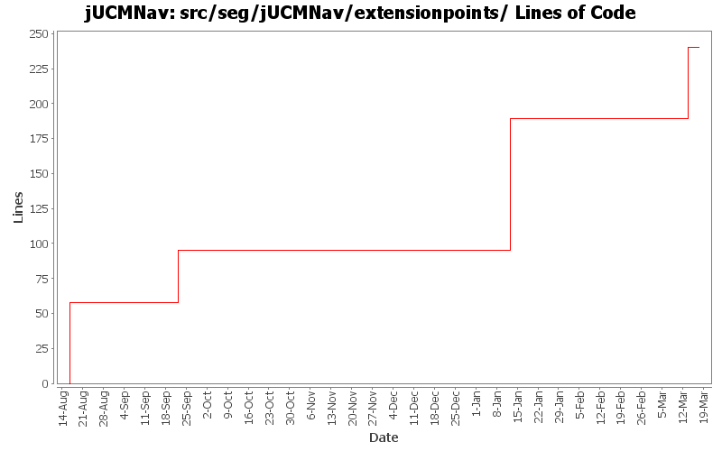

Summary Period: 2005-08-16 to 2006-03-17
[root]/src/seg/jUCMNav/extensionpoints

Total Lines Of Code:
240 (2006-03-31 18:01)
| Author | Changes | Lines of Code | Lines per Change |
|---|---|---|---|
| Totals | 13 (100.0%) | 240 (100.0%) | 18.4 |
| jkealey | 7 (53.8%) | 189 (78.8%) | 27.0 |
| jfroy | 6 (46.2%) | 51 (21.3%) | 8.5 |
Modification of the import autolayout mechanism(added vector for diagrams to do autolayout)
Fixed 2 tests broke in previous commit.
0 lines of code changed in:
Added extension point for the Strategy algorithms
51 lines of code changed in:
Added option to import URN element in the selected file. Added option to autolayout only imported diagrams.
0 lines of code changed in:
Added first version of the GRL catalog import/export
0 lines of code changed in:
Fixed bugs 400, 401, 403 and 404
- Added GRL export as images
0 lines of code changed in:
I had forgotten to remove a few links and implement a few lines of code relating to the import/export infrastructure changes.
0 lines of code changed in:
Created a URN Import extension point and related wizard. currently very simple, but sufficient for the use case to use case map conversion utility which will be packaged seperately.
Various other small modifications to import/export/autolayout extensions/wizards.
94 lines of code changed in:
Merge grl branch with the main trunk
Major modification of the metamodel (URN_08.mdl) (Added GRL metamodel, New interfaces that define common element in GRL and UCM, Modified UCM-Map package to implement the new interfaces (some associations and attributes have been refactored using the interfaces), Map is now called UCMmap (to resolve conflict with java.util.map in the implementation), Removed Path Graph)
Modification of the code that used the metamodel.
Started modification of jUCMNav to support GRL.
0 lines of code changed in:
Added export URNSpec extension point and template for DXL export.
37 lines of code changed in:
* bug 363 - preference page for label colors
* also created preference page for autolayout.
* added our first extension point: UseCaseMapExport.
* Refactored existing export image and autolayout code to create three extensions
* Will have to rethink UI/extension point (or create a new one) to be able to export a URNspec
58 lines of code changed in:
Generated by StatCVS 0.2.4